In these Case Studies we show how to use LEMMA to model COVID-19 hospitalizations in two counties. In San Francisco, LEMMA fits the data fairly easily. In Alameda County, more user intervention is required for LEMMA to fit the data.
Get raw data. It would be better to automate this, but to keep things simple in this example, we exported as csv from https://data.sfgov.org/COVID-19/COVID-19-Hospitalizations/nxjg-bhem. This is COVID-19_Hospitalizations_SFMay6.csv.
Estimate Hospitilization Data bounds LEMMA needs lower and upper bounds on the true number of people hospitalized with COVID-19 on each day. In other words, if all hospital patients in San Francisco were given a perfect COVID-19 test on Day \(X\), how many would test positive for COVID-19? San Francisco has number of confirmed COVID+ and PUI (persons under investigation - suspected COVID-19). We currently assume a lower bound of 100% of confirmed and an upper bound of 100% of confirmed + 30% of PUI (adding together DPHCategory = Med/Surg and DPHCategory = ICU).
A quick overview of the data:
dt <- fread("COVID-19_Hospitalizations_SFMay6.csv") dt[, date := as.Date(reportDate)] dt[, .(meanAcrossDays = mean(PatientCount)), by = c("Hospital", "DPHCategory", "CovidStatus")] #> Hospital DPHCategory CovidStatus meanAcrossDays #> 1: All SF Hospitals Med/Surg COVID+ 47.64444 #> 2: All SF Hospitals ICU COVID+ 28.06667 #> 3: All SF Hospitals Med/Surg PUI 44.26667 #> 4: All SF Hospitals ICU PUI 8.00000
Calculate bounds:
dt[CovidStatus == "COVID+", mult.low := 1] dt[CovidStatus == "COVID+", mult.high := 1] dt[CovidStatus == "PUI", mult.low := 0] dt[CovidStatus == "PUI", mult.high := 0.3] hosp.bounds <- dt[, .(LowerBound = sum(PatientCount * mult.low), UpperBound = sum(PatientCount * mult.high)), by=date] hosp.bounds #> date LowerBound UpperBound #> 1: 2020-03-23 26 62.6 #> 2: 2020-03-24 35 68.3 #> 3: 2020-03-25 40 62.2 #> 4: 2020-03-26 41 65.0 #> 5: 2020-03-27 52 75.7 #> 6: 2020-03-28 53 76.7 #> 7: 2020-03-29 58 81.1 #> 8: 2020-03-30 29 38.9 #> 9: 2020-03-31 57 69.6 #> 10: 2020-04-01 79 103.9 #> 11: 2020-04-02 76 92.2 #> 12: 2020-04-03 69 79.2 #> 13: 2020-04-04 68 84.8 #> 14: 2020-04-05 82 118.6 #> 15: 2020-04-06 93 128.7 #> 16: 2020-04-07 91 107.8 #> 17: 2020-04-08 89 105.2 #> 18: 2020-04-09 86 98.0 #> 19: 2020-04-10 83 94.7 #> 20: 2020-04-11 94 104.5 #> 21: 2020-04-12 90 102.6 #> 22: 2020-04-13 88 100.9 #> 23: 2020-04-14 88 113.8 #> 24: 2020-04-15 89 100.4 #> 25: 2020-04-16 84 94.5 #> 26: 2020-04-17 77 85.1 #> 27: 2020-04-18 78 88.8 #> 28: 2020-04-19 84 93.6 #> 29: 2020-04-20 81 94.8 #> 30: 2020-04-21 80 88.4 #> 31: 2020-04-22 82 90.4 #> 32: 2020-04-23 77 84.5 #> 33: 2020-04-24 78 84.6 #> 34: 2020-04-25 85 97.6 #> 35: 2020-04-26 87 111.9 #> 36: 2020-04-27 89 100.7 #> 37: 2020-04-28 84 92.4 #> 38: 2020-04-29 90 96.6 #> 39: 2020-04-30 90 96.0 #> 40: 2020-05-01 87 95.7 #> 41: 2020-05-02 90 96.0 #> 42: 2020-05-03 86 91.1 #> 43: 2020-05-04 84 87.9 #> 44: 2020-05-05 80 90.8 #> 45: 2020-05-06 78 115.8 #> date LowerBound UpperBound
There may be some data quality problems in March 30 - April 4:
ggplot(hosp.bounds, aes(x = date)) + geom_line(aes(y = LowerBound)) + geom_line(aes(y = UpperBound)) + ylab("Hospitalizations")
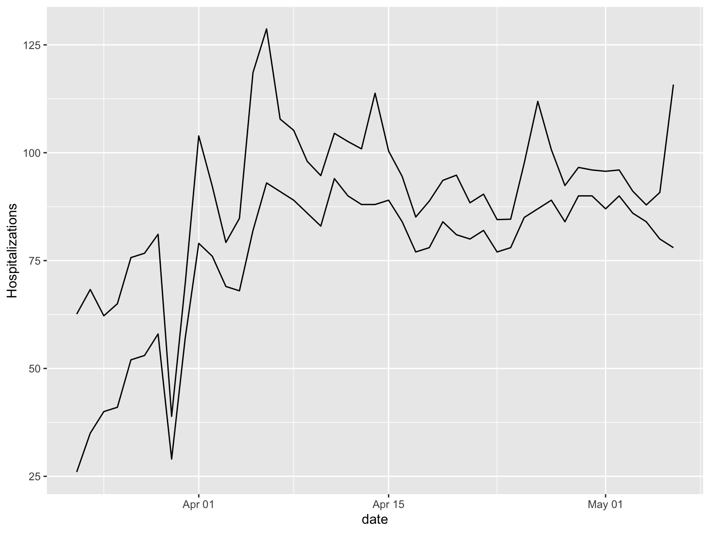
At this point we would suggest investigating this data further with your DPH. For this vignette, we will omit the days March 30, March 31, April 3, April 4.
hosp.bounds <- hosp.bounds[!date %in% as.Date(c("2020-03-30", "2020-03-31", "2020-04-03", "2020-04-04"))]
Open the template Excel file (the original is system.file("extdata", "SF-April13.xlsx", package = "LEMMA") but the installation instructions on GitHub suggest copying it to example.xlsx in your local directory). In Excel, Save As as “SF-May4.xlsx”.
Copy and paste the bounds to the Hospitilization Data tab.
write.table(hosp.bounds, sep = ",", row.names = F, col.names = F) #> 2020-03-23,26,62.6 #> 2020-03-24,35,68.3 #> 2020-03-25,40,62.2 #> 2020-03-26,41,65 #> 2020-03-27,52,75.7 #> 2020-03-28,53,76.7 #> 2020-03-29,58,81.1 #> 2020-04-01,79,103.9 #> 2020-04-02,76,92.2 #> 2020-04-05,82,118.6 #> 2020-04-06,93,128.7 #> 2020-04-07,91,107.8 #> 2020-04-08,89,105.2 #> 2020-04-09,86,98 #> 2020-04-10,83,94.7 #> 2020-04-11,94,104.5 #> 2020-04-12,90,102.6 #> 2020-04-13,88,100.9 #> 2020-04-14,88,113.8 #> 2020-04-15,89,100.4 #> 2020-04-16,84,94.5 #> 2020-04-17,77,85.1 #> 2020-04-18,78,88.8 #> 2020-04-19,84,93.6 #> 2020-04-20,81,94.8 #> 2020-04-21,80,88.4 #> 2020-04-22,82,90.4 #> 2020-04-23,77,84.5 #> 2020-04-24,78,84.6 #> 2020-04-25,85,97.6 #> 2020-04-26,87,111.9 #> 2020-04-27,89,100.7 #> 2020-04-28,84,92.4 #> 2020-04-29,90,96.6 #> 2020-04-30,90,96 #> 2020-05-01,87,95.7 #> 2020-05-02,90,96 #> 2020-05-03,86,91.1 #> 2020-05-04,84,87.9 #> 2020-05-05,80,90.8 #> 2020-05-06,78,115.8
Save the Excel file.
result <- LEMMA::CredibilityIntervalFromExcel("SF-May6.xlsx")
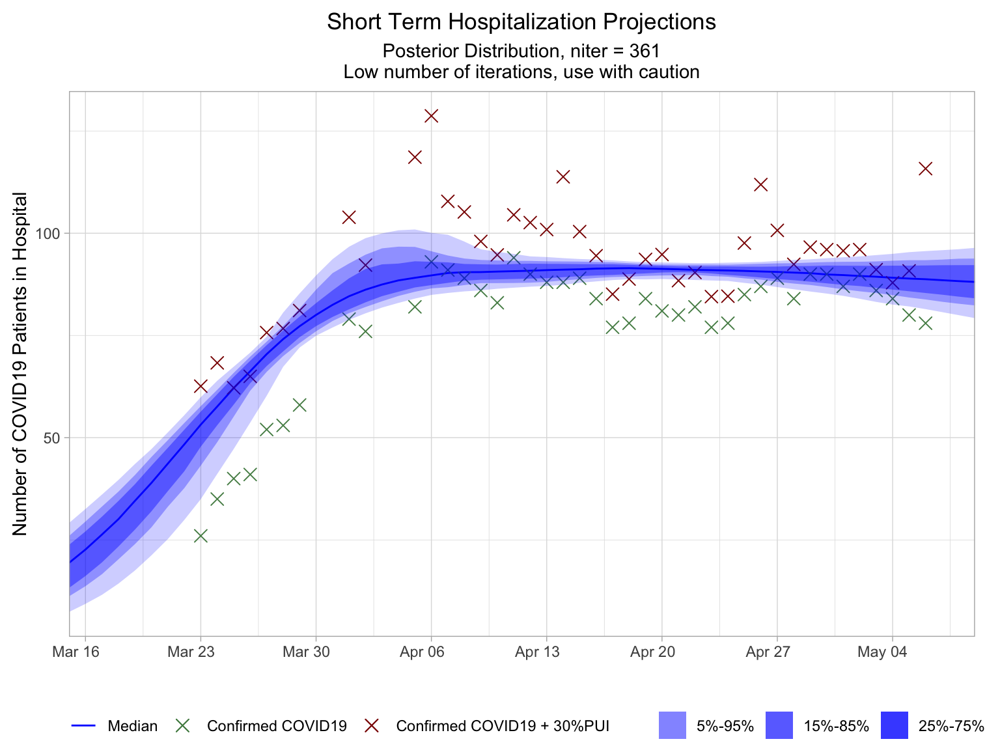
The projection fits the data reasonably well, but we have only 361 posterior distributions. We recommend at least 1000 for inference. On the Internal sheet, change main.iterations to 35000. Save As “SF-May 6-v2.xlsx”
result <- LEMMA::CredibilityIntervalFromExcel("SF-May6-v2.xlsx")
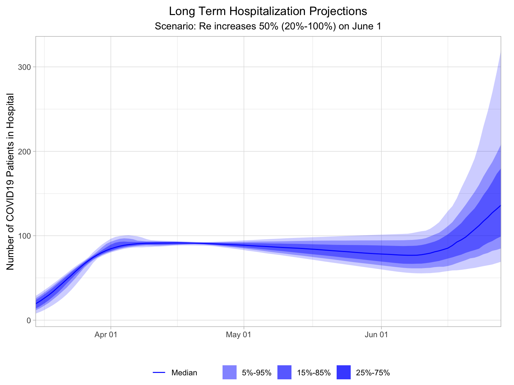
Future changes in public health interventions (for example, relaxing/replacing current Shelter In Place ordinances) can be modelled as a future intervention which multiplies Re by a factor greater than 1. This is already set in the existing xlsx inputs. Below shows the effect of the third intervention which multiplies Re by 1.1 to 2 (C19:G19 in SF-May4.xlsx) on June 1.
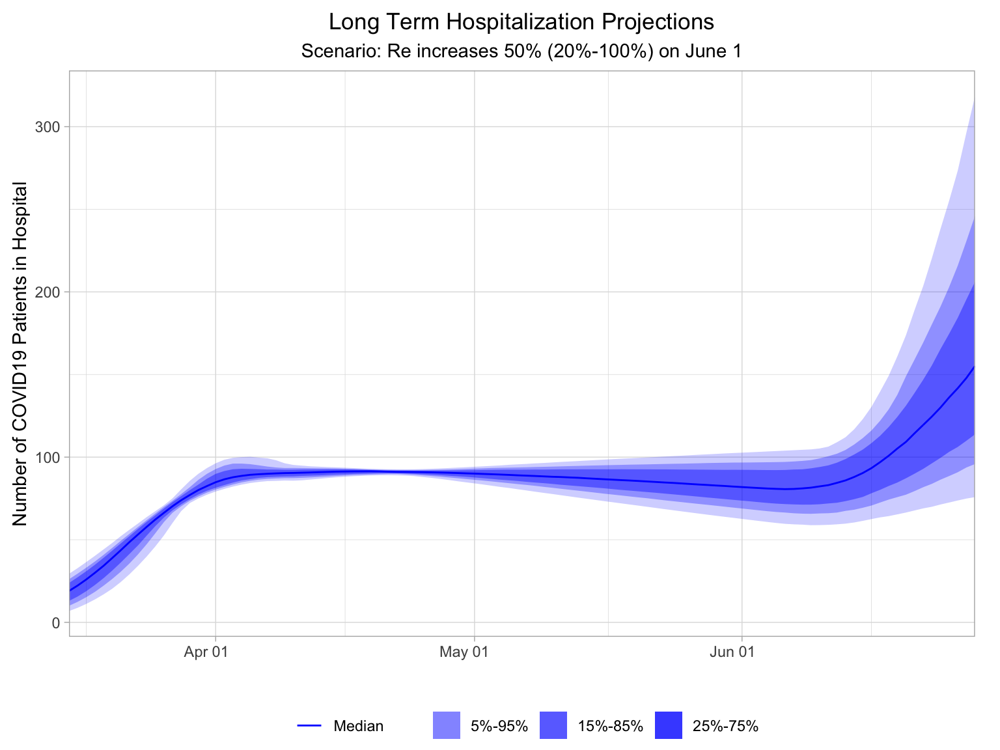
dt <- fread("Alameda_County_COVID-19_HospitalizationsMay4.csv") head(dt) #> Date Hospitalized_COVID_19_Positive_ ICU_COVID_19_Positive_Patients #> 1: 4/1/20 52 27 #> 2: 4/2/20 57 29 #> 3: 4/3/20 64 32 #> 4: 4/4/20 60 35 #> 5: 4/5/20 72 39 #> 6: 4/6/20 79 43 #> Hospitalized_COVID_19_Positive1 ObjectId #> 1: 25 1 #> 2: 28 2 #> 3: 32 3 #> 4: 25 4 #> 5: 33 5 #> 6: 36 6
hosp.bounds <- dt[, .(date = as.Date(Date, format = "%m/%d/%y"), LowerBound = Hospitalized_COVID_19_Positive_)]
The data looks somewhat noisy.
ggplot(hosp.bounds, aes(x=date, y=LowerBound)) + geom_point()
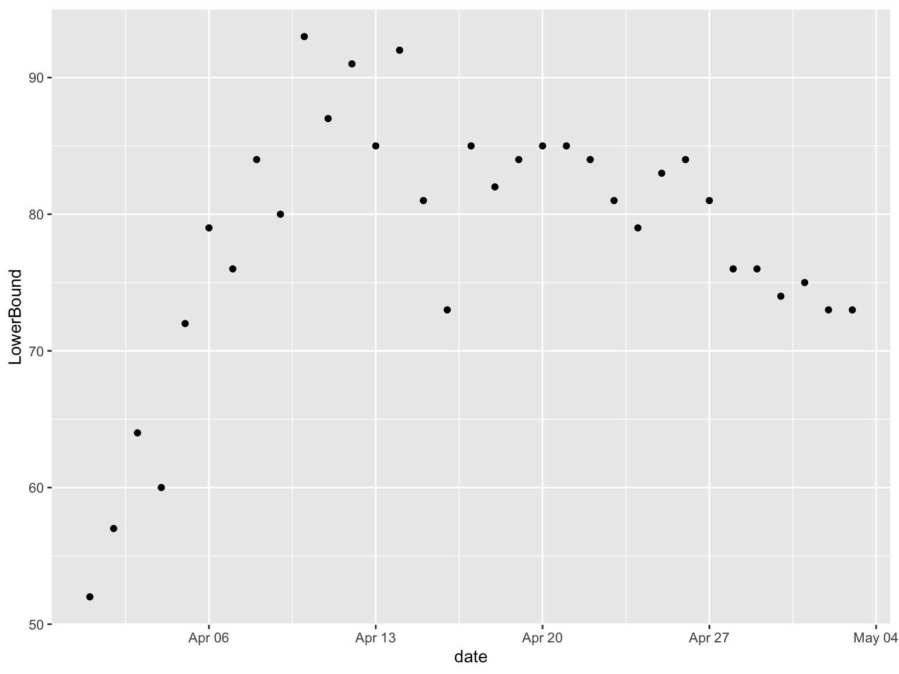
Let’s see what happens if we use it as-is.
In San Francisco, the UpperBound is roughly 115% of the LowerBound, so we could use than as a first approximation.
hosp.bounds[, UpperBound := LowerBound * 1.15] ggplot(hosp.bounds, aes(x = date)) + geom_line(aes(y = LowerBound)) + geom_line(aes(y = UpperBound)) + ylab("Hospitalizations")
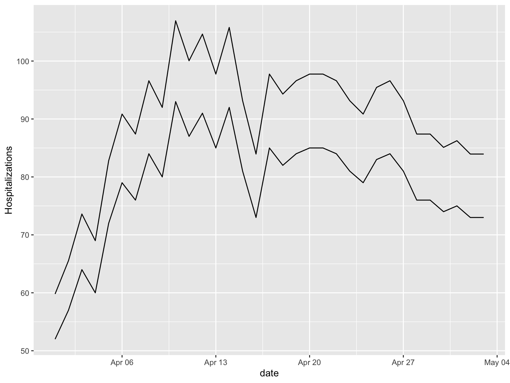
Open the template Excel file. In Excel, Save As as “Alameda-May4-v1.xlsx”.
On the Model Inputs sheet, change Number of People in Area to 1671000
Copy and paste the bounds to the Hospitilization Data tab.
write.table(hosp.bounds, sep = ",", row.names = F, col.names = F) #> 2020-04-01,52,59.8 #> 2020-04-02,57,65.55 #> 2020-04-03,64,73.6 #> 2020-04-04,60,69 #> 2020-04-05,72,82.8 #> 2020-04-06,79,90.85 #> 2020-04-07,76,87.4 #> 2020-04-08,84,96.6 #> 2020-04-09,80,92 #> 2020-04-10,93,106.95 #> 2020-04-11,87,100.05 #> 2020-04-12,91,104.65 #> 2020-04-13,85,97.75 #> 2020-04-14,92,105.8 #> 2020-04-15,81,93.15 #> 2020-04-16,73,83.95 #> 2020-04-17,85,97.75 #> 2020-04-18,82,94.3 #> 2020-04-19,84,96.6 #> 2020-04-20,85,97.75 #> 2020-04-21,85,97.75 #> 2020-04-22,84,96.6 #> 2020-04-23,81,93.15 #> 2020-04-24,79,90.85 #> 2020-04-25,83,95.45 #> 2020-04-26,84,96.6 #> 2020-04-27,81,93.15 #> 2020-04-28,76,87.4 #> 2020-04-29,76,87.4 #> 2020-04-30,74,85.1 #> 2020-05-01,75,86.25 #> 2020-05-02,73,83.95 #> 2020-05-03,73,83.95
Choose your prior distributions in the Parameters with Distributions tab. As an example, let’s use the numbers in the template.
Run CredibilityIntervalFromExcel
result <- LEMMA::CredibilityIntervalFromExcel("Alameda-May4-v1.xlsx")
Note that the “User’s Prior Projection” scenario is not compatible with the given bounds. A projection using only the priors that we specified in Column E of “Alameda-May4-v1.xlsx” do not fall within our bounds on some days. See FAQ.md for more details on exactly what this means.
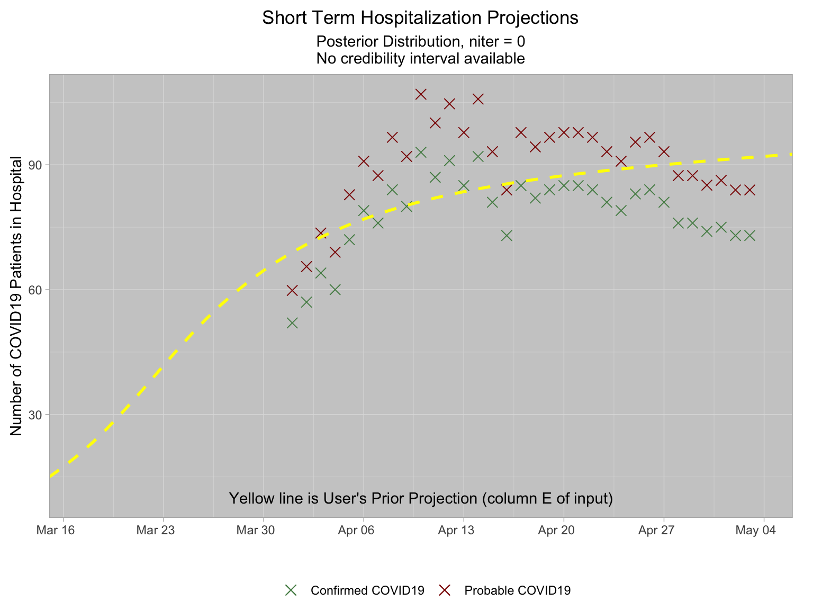
The first page of the .pdf says we have 0 iterations. Obviously we need to make some changes.
The April 16 data is clearly an outlier. Delete that row in Excel.
Save As Alameda-May4-v2.xlsx.
LEMMA::CredibilityIntervalFromExcel("Alameda-May4-v2.xlsx")
Running CredibilityIntervalFromExcel still gives 0 iterations.
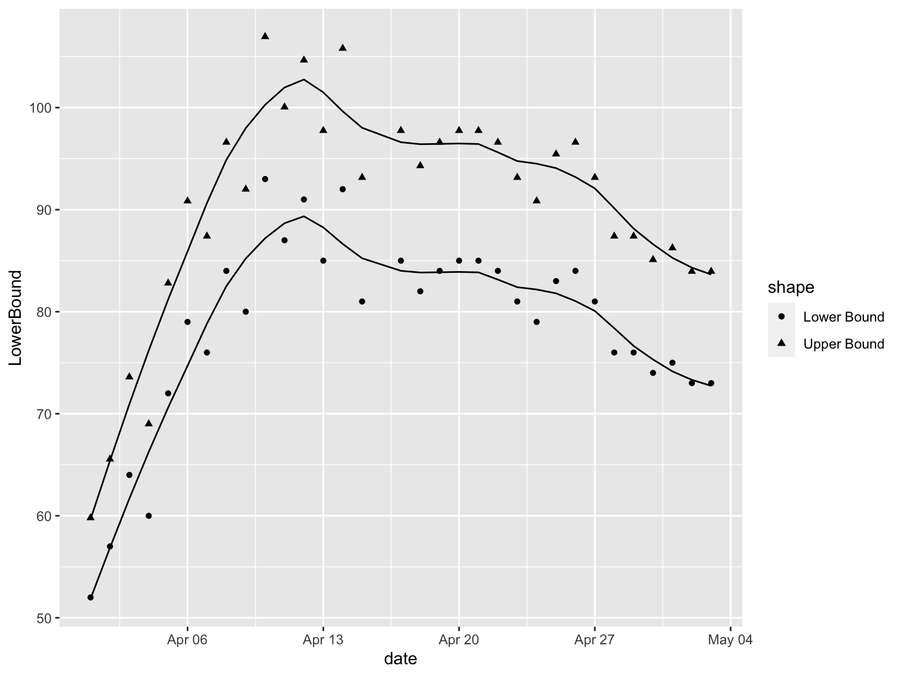
hosp.bounds <- hosp.bounds[date != as.Date("2020-04-16")] hosp.bounds[, orig.lower := LowerBound] hosp.bounds[, orig.upper := UpperBound] hosp.bounds[, date.index := 1:.N] m1 <- loess(LowerBound ~ date.index, data = hosp.bounds, span = 0.4) hosp.bounds$LowerBound <- predict(m1) hosp.bounds[, UpperBound := LowerBound * 1.15] ggplot(hosp.bounds, aes(x = date)) + geom_line(aes(y = LowerBound)) + geom_line(aes(y = UpperBound)) + geom_point(aes(y=orig.upper, shape = "Upper Bound"), fill = "black", na.rm = T) + geom_point(aes(y=orig.lower, shape = "Lower Bound"), fill = "black", na.rm = T)
Copy and paste the bounds to the Hospitilization Data tab.
write.table(hosp.bounds[, .(date, LowerBound, UpperBound)], sep = ",", row.names = F, col.names = F) #> 2020-04-01,51.8832100479336,59.6656915551236 #> 2020-04-02,56.8656337161158,65.3954787735331 #> 2020-04-03,61.6836235450605,70.9361670768195 #> 2020-04-04,66.2661963266626,76.206125775662 #> 2020-04-05,70.6055708802349,81.1964065122702 #> 2020-04-06,74.6986166982751,85.9034092030164 #> 2020-04-07,78.8235965067849,90.6471359828027 #> 2020-04-08,82.5039201267141,94.8795081457212 #> 2020-04-09,85.2057746641351,97.9866408637554 #> 2020-04-10,87.1980945186538,100.277808696452 #> 2020-04-11,88.6691138013258,101.969480871525 #> 2020-04-12,89.3486444947334,102.750941168943 #> 2020-04-13,88.2526493524055,101.490546755266 #> 2020-04-14,86.6398958063131,99.63588017726 #> 2020-04-15,85.2359394345269,98.0213303497059 #> 2020-04-17,84.0066495413416,96.6076469725428 #> 2020-04-18,83.8374332435815,96.4130482301187 #> 2020-04-19,83.8650557177177,96.4448140753753 #> 2020-04-20,83.8966648374278,96.481164563042 #> 2020-04-21,83.852700370669,96.4306054262694 #> 2020-04-22,83.1471546642847,95.6192278639274 #> 2020-04-23,82.4014298322305,94.7616443070651 #> 2020-04-24,82.1764297279875,94.5028941871856 #> 2020-04-25,81.8007613978311,94.0708756075057 #> 2020-04-26,81.0403022884185,93.1963476316813 #> 2020-04-27,80.0703485307944,92.0809008104135 #> 2020-04-28,78.3822879321543,90.1396311219774 #> 2020-04-29,76.6430719942722,88.139532793413 #> 2020-04-30,75.3139130680928,86.6110000283068 #> 2020-05-01,74.1529051109775,85.2758408776241 #> 2020-05-02,73.3223639925667,84.3207185914517 #> 2020-05-03,72.7339972989177,83.6440968937553
To get fast feedback on just the User’s Prior Projection scenario, on the Internals sheet, set main.iterations to 1.
Save As Alameda-May4-v3.xlsx.
result <- LEMMA::CredibilityIntervalFromExcel("Alameda-May4-v3.xlsx")
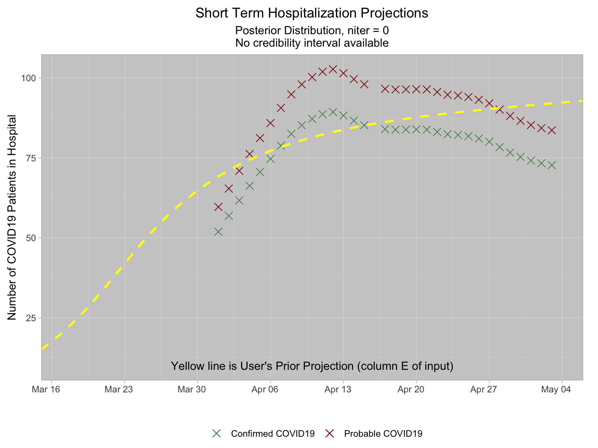
It may be more convenient to plot within RStudio so we don’t have to refer to the .pdf output.
result <- LEMMA::CredibilityIntervalFromExcel("Alameda-May4-v4.xlsx") print(result$gplot$short.term)
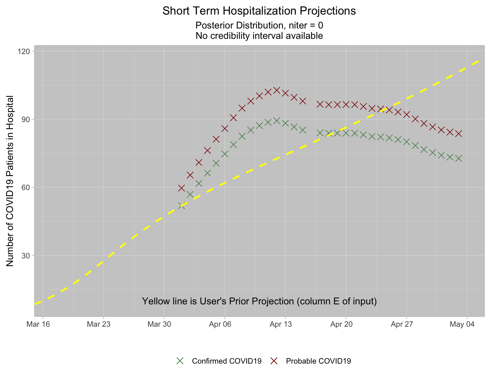
Try fitting E0 (the initial number of exposed) using only the days before peak hospitalization. On the Interal sheet, set max.obs.date.to.fit to 4/10/2020.
z <- LEMMA::CredibilityIntervalFromExcel("Alameda-May4-v5.xlsx") print(z$gplot$short.term)
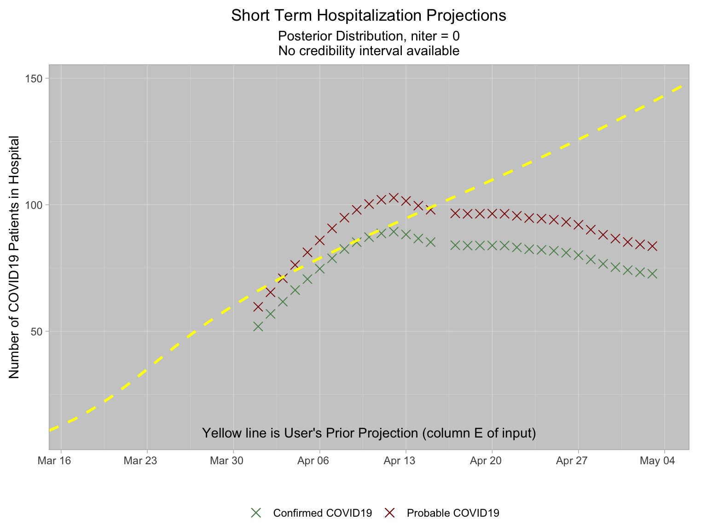
Now the beginning looks better, but then the multiplier for one of the interventions needs to be stronger. Change the first Re multiplier from 0.6 to 0.5.
z <- LEMMA::CredibilityIntervalFromExcel("Alameda-May4-v6.xlsx") print(z$gplot$short.term)
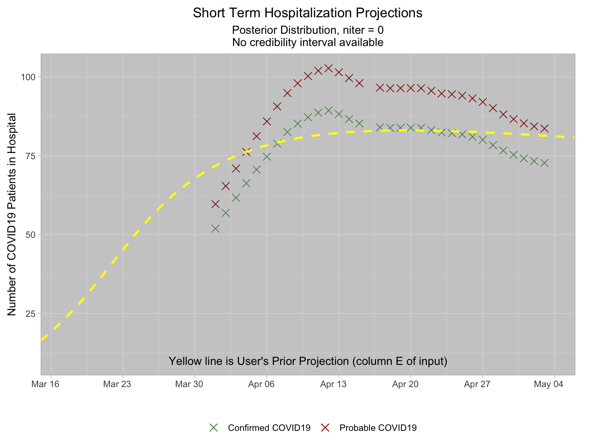
We might be getting in the ballpark. Let’s try a flatter prior distribution. Set all Priors to 20%. Set Re multiplier for the first intervention to 0.35 0.4 0.45 0.55 0.7. Set main.iterations to 10000. Set required.in.bounds to 95%.
result <- LEMMA::CredibilityIntervalFromExcel("Alameda-May4-v7.xlsx")
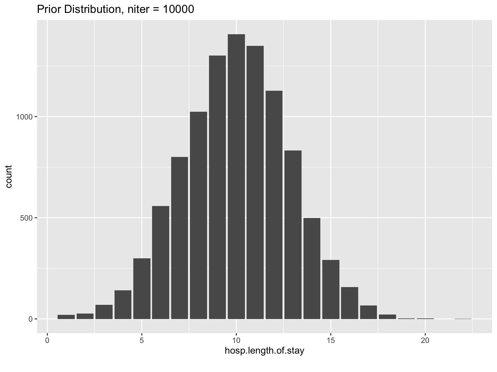
Now we at least have 40 iterations. Based on the histograms in the .pdf output, we might need a longer hospital length of stay (if you have data on this, that would be even better!). 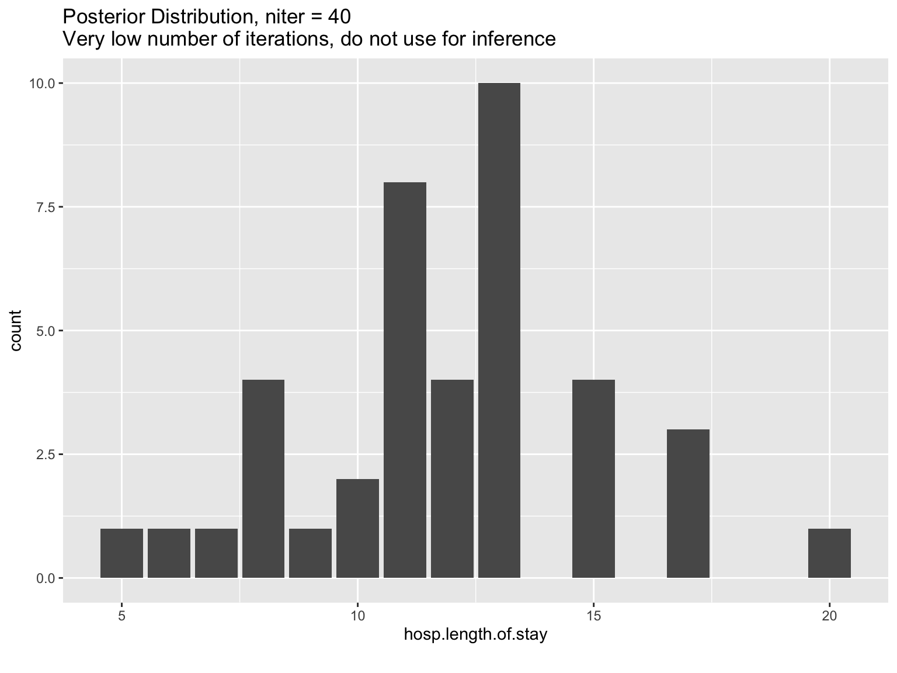
Change Average Hospital Length of Stay to 6 10 14 18 22. Save as Alameda-May4-v8.xlsx.
result <- LEMMA::CredibilityIntervalFromExcel("Alameda-May4-v8.xlsx")
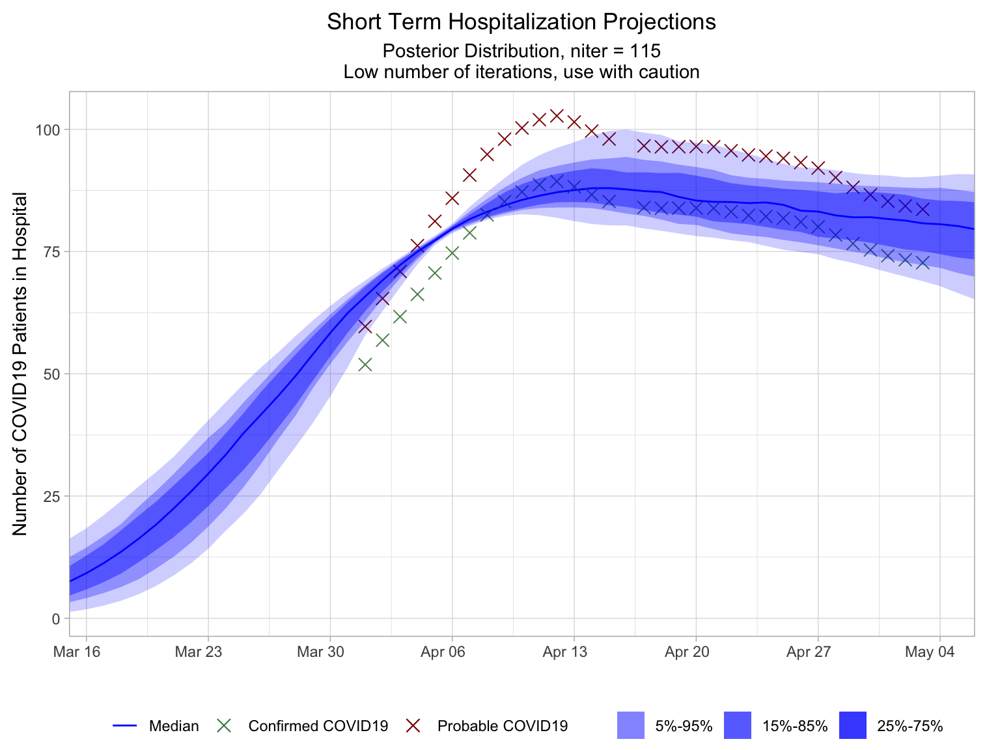
Now we have 115 iterations.
We continued this process and eventually were able to come up with priors that fit the data well. We adjusted the prior probabilities, R0, hospital length of stay, the second Re multiplier, days to reach Re, patients in hospital are infectious and constant rate to hospital.
result <- LEMMA::CredibilityIntervalFromExcel("Alameda-May4-v9.xlsx")
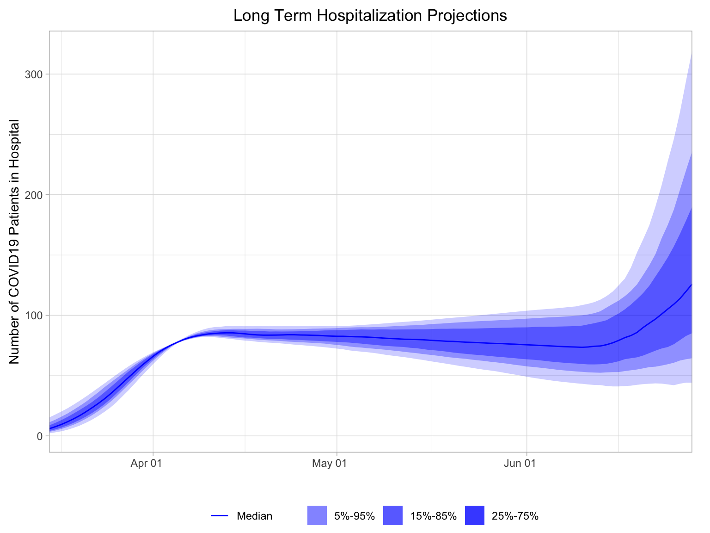
As in “Modelling Future Changes in Transmission” above, the long term projection shows the effect of the third intervention which multiplies Re by 1.1 to 2 (C19:G19 in Alameda-May4-v9.xlsx) on June 1.
This was not shown above, but another thing to try is increasing upper.bound.multiplier and/or decreasing lower.bound.multiplier. This will include combinations of parameters that give projections slightly (more) outside the given LowerBound and UpperBound.
In this case study, an important question is: how confident are we in the UpperBound of the most recent days? These are important because hospitalization appears to be declining. If we force the model to be lower than exactly UpperBound (upper.bound.multiplier = 1) on every day (required.in.bounds = 100%), projections will be more optimistic.
There are several reasons why it may be more prudent to use less strict bounds (above we use lower.bound.multiplier = 0.95; upper.bound.multiplier = 1.10) and to allow the projections to be outside the bounds for some days (above we use required.in.bounds = 95%) . For Alameda County, PUI data was not available so it is especially difficult to know the true number of COVID-19 positive. Even if PUI data were available, it is also possible that the recent decline is due to random fluctuation or reasons not captured by our model.